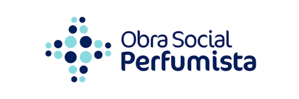

Coberturas





Si no posee ninguna de estas coberturas, contactenos para consultas privadas.
Contamos con dos sedes de atención en la calle San Lorenzo en Ciudad de Mendoza con Consultorios Externos a la altura 375 e Internación y Guardia de 24 hs. al 441.
Los especialistas del Departamento de Otorrinolaringología (ORL)/Cirugía de Cabeza y Cuello de Clínica San Lorenzo atienden a personas con problemas de oído, nariz, garganta, cabeza y cuello. La clínica cuenta con más de 20 especialistas comprometidos a proporcionar atención médica y quirúrgica individualizada.
Servicio de audiología: Cuenta con un equipo de audiólogas con experiencia y entrenamiento en
la
realización de estudios audiológicos en niños y adultos abordando áreas auditivas, vestibulares y
prótesica.
Servicio de foniatría: Fonoaudiólogas especializadas en terapia del lenguaje en niños,
tratamiento
de
disfonía e intervención en trastornos de deglución y respiración en niños y adultos.
Consultas, ECG, Riesgo Quirúrgico, Holter, Presurometría, Ecocardiograma Doppler, Doppler venoso y arterial de miembros
Equipo de Enfermeros capacitados en la atención especializada de prácticas ambulatorias (lavajes nasales, lavajes de oído, inyectables, curaciones, etc.) tanto como en los cuidados pre y postoperatorios de pacientes internados en la Clínica.
Si no posee ninguna de estas coberturas, contactenos para consultas privadas.